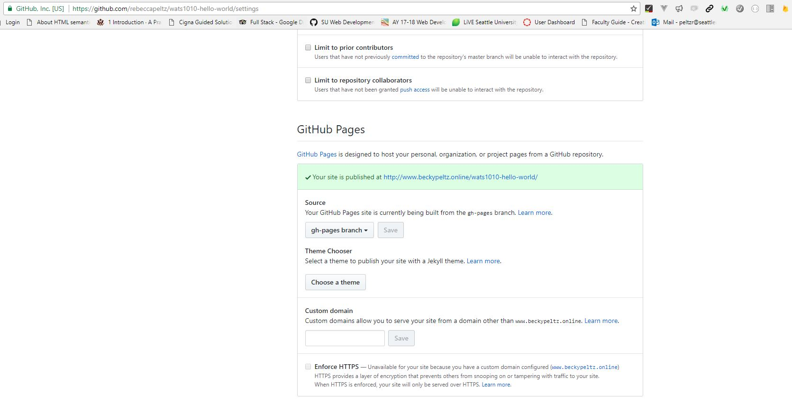

This is the answer to "How to create gh-pages branch for Github hosting?"
Github will host the web pages that you create in your Repos. One way to set up Github hosting is to create a gh-pages branch in your repo. Any code in that branch will be hosted at an address that follows this pattern
https://<account name>.github.io/<repo name>
For example if my account name is janedev and my repo name is wats3010-hello-world , and I have created a gh-pages branch on my repo, I will find the index.html located in the root of the repo served up at this URL:
https://janedev.github.io/wats3010-hello-world
If you have created a gh-pages branch, but are unsure where it is hosted you can click on the Settings tab on the main page of your repo and then scroll down to find the link to the hosted web pages.

When you start working on a new repo you will be in the master branch.
From a bash terminal (git bash on Window or terminal on Mac)
Check which branch you're in
git status
If you are in master and you want to create a gh-pages branch on Github enter the following commands.
First push all your work to master. You can add a single file or all files. The dot (.) indicates all files in this folder and below.
git add <filename> or git add .
git commit -m"my comment message"
git push
Next run checkout -b to create a new branch to be created with the name gh-pages
git checkout -b gh-pages
Next run push -u origin to update Github which is a remote location. Specifiy gh-pages:gh-pages tells github that the branch is named gh-pages locally and remotely. The format is local:remote.
git push -u origin gh-pages:gh-pages
If you are returning to work on code in a repo that you have worked on before, you will not need to run checkout -b because you don't want to create a new branch, you just want to access the existing branch. Start with getting status.
git status
If the status indicates that you are already on gh-pages, you don't have to do anything. If you're on master, you can checkout gh-pages. Notice we don't need the -b when we are not creating a new gh-pages branch.
git checkout gh-pages